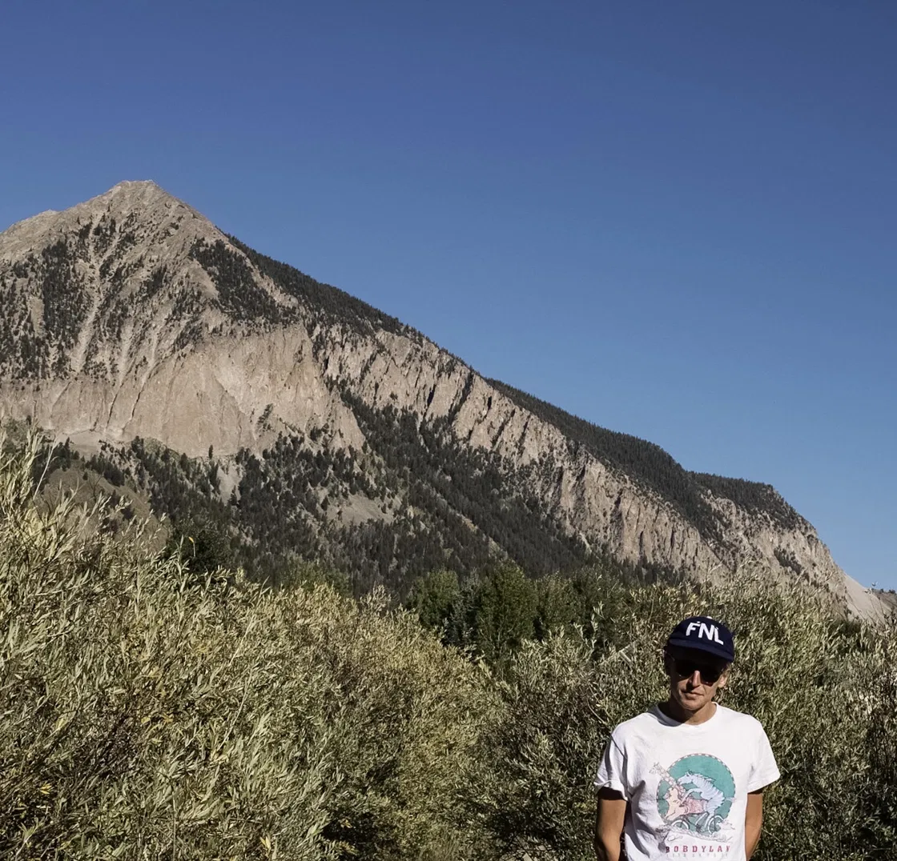

Economic Development · Data Analysis · Applied Research
Rural Economic Development analyst and independent researcher, working at the intersection of regional economic development, applied statistics, and public policy based in the San Luis Valley, Colorado.

San Luis Valley, Colorado
I'm an economics graduate working as a REDI Economic Development Analyst in Colorado's San Luis Valley, one of the most economically complex rural regions in Colorado. My work here begins with making connections, identifying where regional organizations lack capacity and bridging them to the resources that can help.
That means conducting outreach to Economic Development Organizations and Chambers of Commerce across a six-county district, collecting their organizational capacity, and processing what I hear into qualitative and quantitative gap analyses, and making reports on these findings to state and organizational stakeholders who can direct resources to address the strained capacity. I act as a middleman between where things lack and where help exists.
Alongside this, I contribute to larger regional planning efforts, including action plan sections of the Comprehensive Economic Development Strategy (CEDS), retail data analysis, and writing of the Enterprise Zone and EDA reports for the San Luis Valley. These projects let me apply the data skills I'm building toward real policy questions.
During my time in school, I competed as an NCAA Division II cross country and track athlete at Adams State University while earning a BS in Business Economics and an MBA in Finance, both Summa Cum Laude. Managing 20+ hours of training weekly alongside a 4.0 GPA taught me sustained performance under pressure.
My long-term goal is to work as an economist focusing on social issues, bringing quantitative methods to the economic policy questions that are most important to me: regional inequality, rural development, and climate economics. I'm building that toolkit in R and Excel now, with SQL and Stata practice underway through DataCamp.
Applied data analysis projects using R and Excel. Focused on labor markets, housing economics, and public policy. Each project includes full methodology notes, data sources, and reproducible code.
Indexed analysis of home prices, income, inflation, and mortgage rates over 40 years. Constructs a Price-to-Income Ratio, Real Housing Index, and Affordability Gap Index to test the hypothesis that housing has structurally decoupled from income.
Live — View Project
Read Analysis →A Mincer earnings equation estimated on 263,863 full-time workers from the IPUMS CPS. Quantifies wage premiums for education, the unexplained gender gap, the concave experience-earnings profile, and real wage growth over time.
Live — View Project
Read Analysis →OLS estimation of a log-linearized Cobb-Douglas production function on the original Douglas (1928) dataset. Recovers labour and capital elasticities, tests returns to scale, and includes an interactive 3D production surface visualization.
Live — View Project
Read Analysis →A staggered difference-in-differences event study across four Kansas LEMA adoption cohorts (2013–2023). Uses KGS WIZARD well data, USDA NASS crop acreage, and BEA farm income to ask whether locally-governed aquifer restrictions slow groundwater decline without collapsing farm income.
Live — View Project
Read Analysis →Pulls live Census Bureau and BEA data for any U.S. county or town, runs a hedonic regression of home values against income and USDA natural amenity scores across 3,055 counties, and shows what the data actually says with the source attached to every number.
Live — Interactive Tool
Read Analysis →County-level labor force participation analysis using U.S. Census Bureau microdata and ACS datasets. Includes tidyverse data wrangling and ggplot2 visualizations of employment trends across the six-county district.
In the Works
More projects in development. Each will include full methodology notes, data sources, and reproducible code.
Writing on economic development, regional inequality, labor markets, and the political economy of rural America, with an eye toward data-driven policy. Published on Substack.
Read on Substack ↗Every place is a bundle of trade-offs priced by markets before you ever decide to move. Drawing on Rosen (1974), Roback (1982), and Tiebout (1956), this essay explains how wages, rents, and natural amenities settle into spatial equilibrium, and introduces a live tool that runs the hedonic regression for any U.S. county.
Read on Substack ↗An analysis of middle-class debt, income inequality, and structural economic risk. Drawing on Piketty & Saez income share data, household debt-to-income ratios, and wage growth figures, the paper argues that the preconditions for a debt-driven recession mirror those of 2008, and proposes policy interventions including tax reform, union expansion, and antitrust enforcement.
Download PDF ↓A review and synthesis of Stern, Nordhaus, Goulder & Schein, and Boyce on the economics of climate policy. Evaluates carbon tax vs. cap-and-trade frameworks, critiques discount rate methodology in cost-benefit analysis, and introduces Boyce's argument that economic inequality is itself a structural cause of environmental degradation.
Download PDF ↓Author of Enterprise Zone and EDA reports for the San Luis Valley, synthesizing economic indicators and program activity for state agency review. Also contributed action plan sections, retail data analysis, and supporting research to the region's Comprehensive Economic Development Strategy (CEDS).
Experience
Education
Technical Skills
Honors & Accomplishments